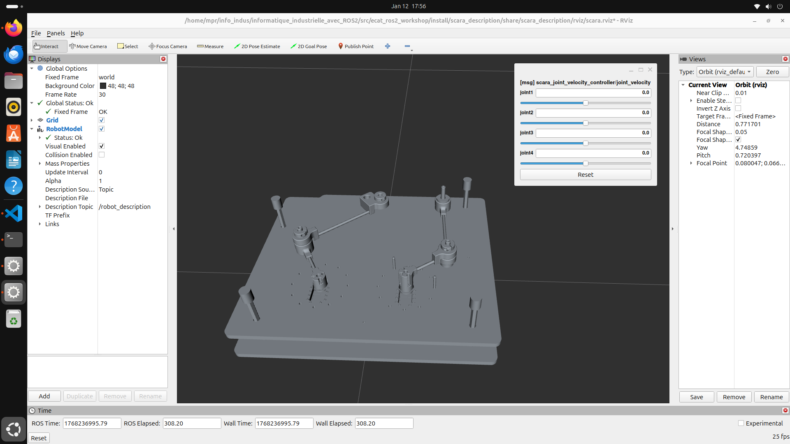

Implémentation du modèle RViz du pantographe sur votre machine
Préliminaires
Avant de commencer, il faut s’assurer d’avoir le bon setup ROS2. Il s’agit de la même configuration que celle utilisée pour le projet du robot Scara (détaillée dans la partie Tutoriel ROS2 épicé/Rappels : Setup ROS2) mais nous allons la résumer ici car quelques commandes ont légèrement été modifiées.
Un projet ROS2 se compile et s’exécute dans ce que l’on appelle un workspace souvent abrévié en ws dans lequel se trouve un répertoire src qui contient les packages ROS2 que vous allez créer ou que vous allez utiliser. Dans le répertoire de votre choix, ici info_indus, créez le répertoire ros2_ws.
cd ~/info_indus/
mkdir ros2_ws
Nous pouvons maintenant y ajouter les fichiers sources du package ROS2 du projet.
cd ~/info_indus/ros2_ws
git clone --branch pantographe_rviz --single-branch https://github.com/Guig-gs/informatique_industrielle_avec_ROS2.git
La commande --branch permet de se positionnner dans la branche pantographe_rviz et --single-branch permet de clôner uniquement cette branche du dépôt GitHub.
Afin d’accélerer les processus de compilation et d’exécution, nous allons utiliser des macros bash qui facilitent la tâche quand on utilise la suite d’outils ROS2 centrée sur colcon.
Ouvrez votre fichier ~/.bashrc avec vscode:
code ~/.bashrc
Ajoutez à la fin du fichier les lignes suivantes, si cela n’a pas déjà été fait :
1###########
2# > ros2
3###########
4
5# stop colcon notifications that destroy dBus notification system
6export COLCON_EXTENSION_BLOCKLIST=colcon_core.event_handler.desktop_notification
7
8# Avoid pitfalls of another than en locale
9alias ros2='LC_NUMERIC=en_US.UTF-8 ros2'
10
11# humble
12alias ros2_humble='source /opt/ros/humble/setup.bash'
13alias ros2_humble_src='ros2_humble && source install/setup.bash'
14
15# jazzy
16alias ros2_jazzy='source /opt/ros/jazzy/setup.bash'
17alias ros2_jazzy_src='ros2_jazzy && source install/setup.bash'
18
19# agnostic distro commands
20
21## build
22alias ros2_dep='rosdep install --ignore-src --from-paths . -y -r'
23alias ros2_build='ros2_dep && colcon build --cmake-args -DCMAKE_BUILD_TYPE=Release --symlink-install && source install/setup.bash'
24alias ros2_build_debug='ros2_dep && colcon build --cmake-args -DCMAKE_BUILD_TYPE=Debug --symlink-install && source install/setup.bash'
25alias ros2_build_reldebug='ros2_dep && colcon build --cmake-args -DCMAKE_BUILD_TYPE=RelWithDebInfo --symlink-install && source install/setup.bash'
26
27function ros2_build_only {
28ros2_dep
29colcon build --cmake-args -DCMAKE_BUILD_TYPE=Release --symlink-install --packages-select $@
30source install/setup.bash
31}
32
33function ros2_build_only_debug {
34ros2_dep
35colcon build --cmake-args -DCMAKE_BUILD_TYPE=Debug --symlink-install --packages-select $@
36source install/setup.bash
37}
38
39function ros2_build_except {
40old="$IFS"
41IFS='|'
42all_except_those="$*"
43IFS=$old
44#echo $all_except_those
45reg=" ^((?!((^|, )("$all_except_those"))+$).)*"
46#echo $reg
47ros2_dep
48colcon build --cmake-args -DCMAKE_BUILD_TYPE=Release --symlink-install --packages-select-regex $reg
49source install/setup.bash
50}
51
52### build moveit
53alias ros2_build_moveit='ros2_dep install -r --from-paths . --ignore-src --rosdistro $ROS_DISTRO -y && colcon build --mixin release --executor sequential && source install/setup.bash'
54
55## test
56alias ros2_test='source install/setup.bash & colcon test --ctest-args tests'
57alias ros2_test_verbose='source install/setup.bash & colcon test --ctest-args "--debug --verbose tests"'
58alias ros2_test_stop_on_failure='source install/setup.bash & colcon test --ctest-args "--debug --stop-on-failure --verbose tests"'
59alias ros2_view_tests='colcon test-result'
60alias ros2_view_tests_all='colcon test-result --all'
61
62
63function ros2_test_only {
64colcon test --ctest-args "--debug --verbose tests" --packages-select $@
65}
66
67function ros2_test_only_stop_when_fails {
68colcon test --ctest-args "--debug --stop-on-failure --verbose tests" --packages-select $@
69}
70
71function ros2_test_only_pkg_test()
72{
73 local pkg=$1
74 local test=$2
75 colcon test --ctest-args "--debug --verbose --tests-regex $2 tests" --packages-select $1
76}
77
78function ros2_test_only_stop_when_fails_pkg_test
79{
80 local pkg=$1
81 local test=$2
82 colcon test --ctest-args "--debug --stop-on-failure --verbose --tests-regex $2 tests" --packages-select $1
83}
84
85function ros2_view_result_of_test()
86{
87 colcon test-result --verbose --test-result-base build/$@
88}
89
90# < ros2 <
Enregistrez le fichier et fermez vscode.
Rechargez votre fichier ~/.bashrc pour prendre en compte les modifications:
source ~/.bashrc
Vous pouvez maintenant utiliser les macros bash que vous venez de définir.
Utilisation du package
Nous allons maintenant compiler le package ROS2 que nous venons de cloner à l’aide des macros bash que nous venons de définir.
cd ~/info_indus/ros2_ws
sudo apt-get update
ros2_jazzy
ros2_build
Si tout s’est bien passé, vous devriez voir un message de succès à la fin de la compilation.
#All required rosdeps installed successfully
Starting >>> scara_description
Starting >>> scara_bringup
Starting >>> scara_joint_velocity_controller
Starting >>> scara_nodes
Finished <<< scara_description [0.88s]
Starting >>> scara_hardware
Finished <<< scara_nodes [0.90s]
Finished <<< scara_bringup [1.14s]
Finished <<< scara_hardware [4.50s]
Finished <<< scara_joint_velocity_controller [8.28s]
Summary: 5 packages finished [8.52s]
Note
ros2_jazzy est un alias qui charge l’environnement ROS2 de la distribution jazzy.
ros2_build est un alias qui installe les dépendences et compile tout le workspace ROS2 courant.
Finalement, la commande ci-dessous permet de lancer le noeud ROS2 qui ouvre RViz avec le modèle du pantographe.
ros2 launch scara_bringup scara.launch.py
Pantographe modélisé dans RViz

Le pantographe ne peut pas être assemblée dans RViz, nous avons cassé la liaison centrale. En effet, RViz ne prend pas en charge les systèmes en boucle fermée